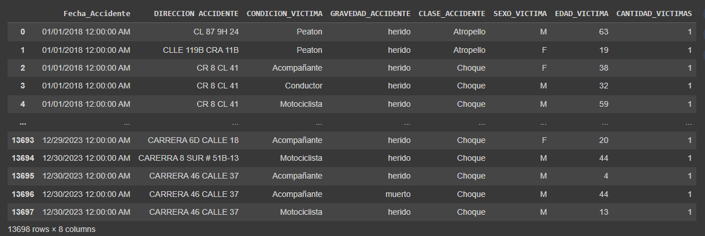

Our selected Dataset
Information on accident victims in Barranquilla (from DatosAbiertos)

Explanation from our Database and brief visualization of the data
The dataset "Accidentalidad en Barranquilla - víctimas" (Accidents in Barranquilla - victims) from
datos.gov.co is crucial for addressing public safety concerns,
transportation planning, policy formulation, research endeavors, community awareness, and resource allocation.
By providing comprehensive information about accident victims
in Barranquilla, Colombia, this dataset serves as a vital tool for understanding the frequency, nature, and
locations of accidents, therefore enabling targeted interventions to reduce accidents and associated harm.
Analysis of the data facilitates insights into transportation patterns, infrastructure deficiencies, and
factors contributing to accidents,
informing the development and evaluation of effective policies aimed at enhancing road safety.
Moreover, making this data publicly available raises community awareness about the importance of road safety
and encourages safer behaviors while traveling.
It's important to mention that with this project We could also identify and pinpoint high-risk areas,
efficiently allocate resources for their prevention,
and plan prevention strategies accordingly.
The statistical insights derived from the dataset analysis reveal notable patterns regarding accident
victimization in Barranquilla. Fluctuations in the quantity of victims over time suggest potential seasonal
variations in accident rates, while the distribution of victims across different severity levels and types of
accidents underscores the need for targeted interventions and safety measures. Disparities in victim
distribution by gender highlight demographic considerations for safety initiatives, while identifying age
groups most affected by accidents offers valuable guidance for tailored educational programs and preventive
measures. Overall, these insights provide crucial information for policymakers and community stakeholders to
formulate effective strategies aimed at improving road safety and reducing the number of accident victims in
Barranquilla.